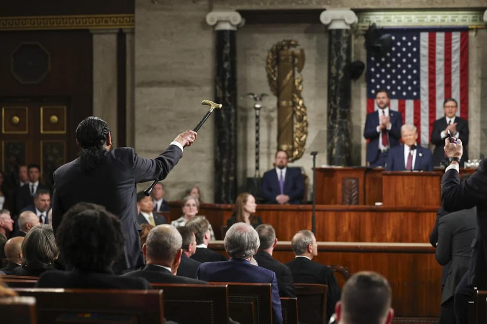

世界苦茶03月06日新闻 | 36条 | 中国设定20年来最低通胀目标

中国设定20年来最低通胀目标 | 加拿大在关税战上非常坚决 | 美国施压亚洲国家增加军费 | 美国暂停与乌克兰分享情报 | 德国设想修宪设立5000亿国防基金
透明茶室
苦茶数据
美元兑人民币：7.24（昨日7.26，前日7.28）
美元兑日元：149.26（昨日150.10，前日149.06）
上证指数：3377（昨日3324，前日3316）
标普500指数：5842（昨日5778，前日5849）
比特币：91903（昨日87708，前日83788）
布伦特原油：69.70（昨日70.99，前日71.12）
中国新闻
• 中国特使否认利用美欧嫌隙拉拢欧洲 ：美国与欧洲关系现嫌隙，似乎让北京有了与欧洲走近的可乘之机。对此，不久前出任中国政府欧洲事务特别代表的卢沙野在中国两会期间，否认北京会“乘人之危”及挑拨他国之间关系。卢沙野也称，中国不需要拉拢作为美国盟友的欧洲，中国的政策是和所有人交朋友，同时促请欧洲反思中欧关系。身为政协委员的卢沙野星期三下午在北京丰大国际大酒店，出席全国政协对外友好界小组讨论。他在会后接受媒体采访时，严辞批评美国对欧及对华政策，指特朗普政府“蛮横霸道”，大叹“我站在欧洲的立场，说实话感到有点心寒”。
• 中国教育部推进“县中振兴”计划 ：中国教育部部长怀进鹏说，今年将推出“县中振兴”行动计划，优化县域中学的布局和教师结构，给学生提供更好的教育。综合澎湃新闻和上观新闻报道，怀进鹏星期三在人大会议首场“部长通道”集中采访活动中说，中国国家主席习近平对教育极其关注，这次政府工作报告也强调要加强面对未来，面对青年的工作。他说，对教育部而言，要重点做好几个方面工作：第一，随着人口变化和城镇化的发展，教育部将会推进市县统筹的模式和机制，推进城乡教育特别是面向市县发展当中的动态调整机制，以适应社会和人口结构的调整。
• 中国外交部否认“控制巴拿马运河”指控 ：美国就运河问题向巴拿马施压，长江和记拟出售巴拿马港口公司九成股权。对此，中国外交部说，所谓“中国控制巴拿马运河”纯属谎言。中国外交部发言人林剑星期三主持例行记者会，回答记者关于巴拿马运河的问题。林剑说，在巴拿马运河问题上，中方支持巴拿马对运河的主权，致力于维护运河作为永久中立的国际通行水道地位，中方从未参与运河的管理运营，也不插手运河的事务。所谓“中国控制了运河”，完全是谎言。
• 政协委员呼吁删除《民法典》离婚冷静期 ：中国政协委员蒋胜男呼吁，删除《民法典》中离婚冷静期条款。据《南方周末》星期二报道，在北京参加中国全国两会的蒋胜男说，离婚冷静期并没有实现黏合婚姻的效果，虽然从行政手段上似乎让协议离婚减少了，却导致了诉讼离婚的增加，也挡不住结婚率、生育率的持续走低。她指出，离婚事件当事人均为具备完全民事行为能力的公民，有权决定自己的婚姻是否继续。法律不应以极少数冲动离婚的案例为由，强制全体离婚当事人承担额外成本。
• 中国强调统一大市场的重要性 ：中国政府工作报告起草组成员、国务院研究室副主任陈昌盛在吹风会上形容，如果不搞统一大市场，相当于自废武功。据澎湃新闻报道，国务院新闻办公室在星期三上午举行吹风会，请政府工作报告起草组负责人、国务院研究室主任沈丹阳，政府工作报告起草组成员、国务院研究室副主任陈昌盛解读政府工作报告，并答记者问。会上有记者提问，建立全国统一大市场是系统性工程，政府工作报告已连续两年对全国统一大市场建设作出专门部署，背后有什么考虑？下一步有何举措？陈昌盛说，中国拥有一个超大规模市场，拥有14亿人口，任何1%的需求看起来可能是小众的，对应的就是1400万的大市场。
• 中国军费增长7.2%，达1.78万亿元 ：中国今年军费预算为1.78万亿元人民币，同比增长7.2%，增幅与去年持平。这是自2022年以来，中国军费预算增幅连续四年超过7%。中国财政部在今天公布的政府预算草案报告中披露今年军费预算信息。中国军费预算在过去四年来从6.6%的低点逐步回升。2022年的增幅达7.1%，2023年和2024年的增幅均为7.2%。
• 美司法部起诉12名中国公民，指控全球黑客行动 ：美国司法部星期三宣布，包括雇用黑客雇佣兵、执法人员和一家信息技术公司员工在内的12名中国公民被起诉，他们被控从事了全球计算机入侵行动。美国司法部的声明说，司法部、联邦调查局、海军刑事调查局、国务院和财政部当天宣布他们展开了有协调的努力，打破和震慑这12名中国公民的恶意网络行动。
• 中国政府报告提及生育补贴，引发社交媒体热议 ：中国年度全国人大会议于3月5日正式开幕，总理李强发表政府工作报告，在长达一小时、逾1.7万字的演讲中，关于“发放育儿补贴”和“普惠托育”政策的短短一句话，却在社交媒体上引发热烈讨论。许多网民疾呼“养娃难、快落实”，但也有人质疑“补贴资金从何而来？”对此，一位人口专家直言，各国经验显示，洒币救生育率是个“无底洞”，且收效甚微，中国须找对病根，即年轻人失业、女性晚婚晚育和教育成本太高等问题，才能稳生育。李强在政府工作报告中表示，中央政府将“制定促进生育政策，发放育儿补贴，大力发展托幼一体服务，增加普惠托育服务供给。”短短不到40字的话语迅速登上微博热搜，截至当日晚间8点，相关话题阅读量突破1.3亿。
• NGO报告显示，中国或涉及危害人类罪的大规模拘押 ：非政府组织“中国人权捍卫者”(CHRD)星期三发表一份报告《牢房中等待黎明：中国的任意羁押可能构成危害人类罪》。内容显示，过去六年来，中国当局大规模任意羁押数千人，其中至少1545人因为和平表达意见或行使人权而遭判刑入狱。报告认为，这种行为的广泛性与系统性，可能已构成危害人类罪。“人权捍卫者”联席执行主任索菲·理查森表示：“中国刑事司法系统的每一个环节，从警察、检察官到法院，都在使用毫无根据的指控来非法羁押，明显违反中国政府的国内和国际人权义务。”报告指出，2019年至2024年间被判刑的良心犯，平均刑期长达六年，而涉及所谓“危害国家安全罪”者，平均刑期则升至七年。
亚太印太新闻
• 台湾计划采购更多美制武器 ：台湾外交部次长吴志中说，台湾计划向美国采购更多武器，以寻求与美国建立更紧密的安全关系。吴志中星期二在台北办公室接受彭博社采访时表示：“我相信，在非正式层面上，我们可以与美国建立更紧密的安全关系。”他说，台湾正努力实现这一点，“这也将向中国大陆释放一个信号：不要轻易碰台湾”。
• 美防务官员建议台湾国防预算增至GDP10% ：被提名为美国国防部政策次长的科尔比说，台湾需要大幅提高国防预算至地区生产总值的10%左右，以震慑中国大陆。综合路透社和彭博社报道，科尔比星期二在参议院提名确认听证会上，批评台湾在国防领域的投入远远不足，远低于GDP的3%。科尔比是知名的对华鹰派，曾在特朗普政府首届任期内于五角大楼任职。他在提交给参议院军事委员会的书面答复中写道：“从台湾的角度来看，两岸之间军事平衡已急剧恶化，因此台湾应大幅增强自身国防能力，重点放在阻止入侵并抵御封锁。”
• 泰国警方逮捕100名涉诈骗嫌疑人 ：泰国警方星期三拘留了100名诈骗分子，指控他们涉嫌参与柬埔寨境内的诈骗中心。这是泰国首次在区域范围内逮捕参与大规模诈骗行动的泰国公民。警方指出，自2022年以来，泰国因电信诈骗损失约800亿泰铢。路透社报道，泰国警察总长塔差星期三指出，被捕的100人是诈骗团伙的核心成员，他们通过冒充政府官员骗取受害人资金。此外，警方已对两名被指为“团伙头目”的中国籍嫌疑人发出逮捕令。近年来，泰缅边境地区的诈骗活动猖獗，但自中国演员王星在泰国遭遇绑架并被转至缅甸诈骗窝点后，便引起各方高度关注，促使多国开展合作打击诈骗犯罪网络。
• 美防务专家建议日本提高国防预算 ：美国国防政策专家建议日本提高国防开支，日本首相石破茂回应称会自行决定防卫费，“不会因为他国的建议而改变”。共同社报道，美国国防部政策事务副部长提名人、国防部前副助理部长科尔比近日建议，日本应尽快将国内生产总值的防卫费比重提高到3%。日本首相石破茂星期三在参议院预算委员会上明确表明：“日本的防卫费由日本自行决定，不会因为他国的建议而改变。”
• 卫星图像显示朝鲜接近完成首架空中预警机 ：美联社星期三报道，卫星图像显示，朝鲜似乎接近完成其首架空中预警机。专家表示，该机一旦投入使用，将大幅提升朝鲜的空军力量。朝鲜的核计划和导弹计划对韩国、美国等国家构成重大安全威胁，但其空中侦察能力远远落后于竞争对手，而且大多数战斗机和其他军用飞机均已老旧。美联社援引专注于朝鲜问题的北纬38度网站报道，最近的商业卫星图像显示，一架伊尔-76飞机停在平壤机场，机身顶部安装了一个大型雷达天线罩。
• 一架参与韩美联合军演的战斗机3月6日误炸京畿道抱川市的住宅区，战斗机投下8枚炮弹，已致7人受伤，2座民宅受损。
科技新闻
• 韩国AI数字教科书计划推进缓慢 ：韩国于3月4日开启新学期，但教育部透露，尽管当局推出了人工智能数字教科书计划，但行政和技术上的障碍使该计划的整体采用率仍停留在33%左右。综合韩国媒体报道，韩国教育部官员星期二在新闻发布会上称，截至2月28日，全国范围内采用数字教科书的学校比例为33%，与2月20日报告的32.4%几乎持平。教育部表示，最终统计数据将在各校完成行政程序后公布。为了全面整合AI教科书，各校需在“国家教育信息系统”中完成多项准备工作，包括注册选定的AI教科书、输入课程表和更新学生学籍记录。一系列行政步骤令学生和教师在正式使用数字教材前，还需要再等待一到两周。
• 特朗普提议废除527亿美元半导体补贴法案 ：美国总统特朗普于美东时间星期二在国会联席演讲中说，美国国会议员应废除一项2022年具有里程碑意义的两党立法，该法案向半导体晶片制造和生产提供了约527亿美元的补贴，并将节省的资金用于偿还债务。特朗普在国会演讲中说道：“晶片法案是一个非常、非常糟糕的事情。我们投入了数千亿美元，但没有任何意义。他们拿走了我们的钱，却并未加以利用。”他补充道：“你们应该废除晶片法案，把剩下的资金用来减少债务。”
• NASA宇航员否认滞留太空与政治有关 ：美国国家航空航天局的两名宇航员已在太空滞留约10个月。美国总统特朗普此前声称，这两名宇航员被拜登政府“几乎遗弃”。但宇航员对此回应称，他们的滞留与政治无关。彭博社报道，NASA宇航员威尔莫尔星期三在国际空间站连线受访时说：“他们说的话，那就是政治……从我的角度来看，这完全和政治无关。”威尔莫尔与队友威廉姆斯自去年6月起驻留国际空间站。他们原本计划进行为期约一周的测试飞行，以验证波音公司“星际客机”飞船的安全性。然而，由于飞船在飞行中遭遇技术问题，NASA认为使用其将宇航员送回地球风险过高。
• 谷歌与特朗普政府会面，反对公司拆分 ：知情人士透露，谷歌母公司Alphabet上周与特朗普政府会面，敦促华盛顿放弃拆分公司的计划。路透社报道，美国司法部目前正对谷歌提起两起反垄断诉讼，涉及搜索业务和广告技术。谷歌发言人说：“我们定期与监管机构会面，包括司法部，就此案进行讨论。正如我们此前公开表态的那样，我们担心当前的提案可能损害美国经济和国家安全。”
• 马斯克削减科研预算遭图灵奖获得者抨击： 图灵奖获得者杰弗里·辛顿发帖称，马斯克应被英国皇家学会开除，理由是其对美国科研机构造成的巨大损害，并表示要看马斯克是否真的相信言论自由。对此，马斯克回应称只有懦弱、缺乏安全感的蠢货才在乎奖项和成员身份，历史才是真正的评判者，还指责其评论是无知、残忍且不实的。但马斯克同时询问自己具体哪些行为需要纠正，并表示自己虽会犯错但会努力改正。另一位获得者杨立昆对辛顿的观点表示赞同，并指出，马斯克停止削减研究资助机构的预算，是纠正其诸多 “无知、残忍、愚蠢且短视错误” 的良好开端，其还提到目前美国大学 (因经费) 正在撤回对新教师和博士生的录取邀请。
• 洛杉矶时报利用 AI 分析文章是否存在偏见： 洛杉矶时报周一宣布，将利用人工智能为其刊登的专栏文章生成反驳意见。该报老板黄馨祥在给订户的信中说：“我认为，提供更多样化的观点符合我们的新闻使命，而且将帮助读者在面对我们国家所面临的问题时理清思路。”今后洛杉矶时报会给每一篇专栏文章标注 “个人观点” 的标签。标签的适用范围不仅限于该报发表的评论文章，当一篇主要基于事实的文章是从个人角度撰写时，也会被贴上这个标签。一旦贴上，由人工智能生成的评论会被插入到文章中，以确定所表达的观点属于哪种政治倾向。人工智能还将提供不同来源的关于该主题的不同观点。
• OpenAI 计划对博士级AI智能体每月收取 2 万美元费用： 消息人士透露，OpenAI 正在加倍投入其应用程序业务，以加速 ChatGPT 模型的变现。 OpenAI 高管向一些投资者透露了他们计划未来将推出的三类智能体，面向“高收入知识工作者”的月费 2,000 美元的 AI 低端智能体、专为软件开发而设计月费 10,000 美元的中端智能体、以及可以用作博士级研究的月费 20,000 美元的高端智能体。OpenAI 未来预计智能体产品将占公司总收入的 20% 至 25%。
财经新闻
• 中国金融监管总局扩大房地产融资支持 ：中国金融监管总局局长李云泽说，在房地产方面，今年将重点抓两方面的工作，包括支持稳楼市，推动协调机制扩围增效，拉长“白名单”，让更多符合条件的项目拿到贷款。综合南方网、证券时报网、第一财经报道，李云泽星期三在全国人大会议首场“部长通道”上回答记者提问时说，房地产方面，今年重点抓两方面的工作：一是支持稳楼市，持续推动融资协调机制扩围增效，拉长白名单，让更多符合条件的项目拿到贷款，坚决做好保交房工作；二是配合促转型，抓紧研究制定配套融资制度，支持房地产发展新模式的构建，促进房地产市场持续健康发展。白名单是指由地方政府筛选并推送商业银行，以期获得包括信贷、债权和股权融资等多方面支持的房企名单。
• 中国设定20年来最低通胀目标 ：中国官方将今年的通胀目标设在20多年来的最低水平，中国国务院研究室坦言，当前物价下行压力大于上涨压力，将努力通过各种政策推动物价温和回升。中国国务院总理李强星期三在《政府工作报告》中提出，今年居民消费价格的目标涨幅在2%左右。彭博社指出，这是2003年以来的最低水平，表明在前两年通胀率仅达0.2%的背景下，官方承认提振通胀将是个挑战。综合《证券时报》和财联社报道，《政府工作报告》起草组成员、国务院研究室副主任陈昌盛星期三在新闻发布会上说，今年将物价涨幅预期目标调整为2%左右，背后是一个更为积极、政策导向更鲜明的信号，即在中国物价下行压力大于上涨压力背景下，向全社会和市场强化价格指标的导向作用，通过各种政策推动物价温和回升。
• 迪士尼拟裁员200人，影响ABC新闻部门 ：知情人士透露，好莱坞大厂迪士尼计划在澳洲广播公司和迪士尼娱乐网络部门裁减约200个职位，相当于整体员工的6%。这个裁员公告最早或于星期三发布。据《华尔街日报》星期二报道，ABC新闻的节目“20/20”与“Nightline”将合并为一个单元。此外，ABC还计划关闭政治与数据分析新闻网站538，这个团队约有15名员工。迪士尼旗下的ABC新闻还负责制作知名新闻脱口秀《早安美国》。据报道，节目的三个时段将统一由一名负责人管理，此前第三个时段曾设有独立制作团队。
• 台积电称日本投资计划不变 ：宣布将在美国追加投资后，全球晶片代工巨头台积电称，在日本的投资计划不变。据日本共同社报道，台积电星期二称，扩大对美投资主要是回应客户需求，扩大生产规模，“在台湾的投资计划没有变化，对日本的投资也会持续进行。”台积电去年在日本首个生产基地熊本第一工厂启动量产，最快今年内将启动建设制造6纳米制程产品的第二工厂，力争2027年底投产。
• 特朗普宣布美日韩计划投巨资建阿拉斯加天然气管道 ：美国总统特朗普于美东时间星期二在国会联席演讲中说，日本、韩国，以及其他国家有意与美国合作，建设阿拉斯加“巨型”天然气管道。他称这些国家计划分别投资“数万亿美元”。特朗普说：“日本、韩国，以及其他国家希望成为我们的合作伙伴，各自投资数万亿美元。”特朗普提到，该管道将成为全球最大的管道之一。
• 特朗普宣布免征小费和加班工资税 ：美国总统特朗普于美东时间星期二在国会联席讲话中承诺将为公众减税，并称“这将是我们计划的重要组成部分”。他指出，其税收计划将免征小费、加班工资和社会保障金的税款，这是他竞选时的三大承诺之一。特朗普同时讽刺民主党人反对减税，暗示如果他们不支持共和党的减税方案，将永远无法再次赢得选举。当特朗普列出这些减税措施时，民主党众议员特莱布举起标语，上面写着：“先把你的税交了。”
• 美政府研究出售联邦标志性建筑以缩减开支 ：特朗普政府宣布，正着手研究出售一些联邦政府的标志性建筑，包括司法部总部、联邦调查局总部以及旧邮政大楼等。路透社报道，美国总务署星期二发布声明称，已确认443处总面积超过8000万平方英尺的物业，这些物业被认为并非政府运营的核心资产，当局或通过出售减少联邦支出。这项出售计划被视为特朗普政府缩减联邦规模的一部分，由全球首富马斯克领导的“政府效率部门”主导。DOGE宣称，这些精简措施已为政府节省1050亿美元，其中部分削减来自取消政府房产租约。不过，预算专家对该部门提供的数据表示质疑。
俄乌战争
• 美国暂停与乌克兰的情报共享 ：美国中央情报局局长拉特克利夫星期三说，美国已暂停与乌克兰的情报共享。法新社报道，特朗普和泽连斯基上周在白宫公开闹翻，随后美国宣布暂停向乌克兰提供军事援助。拉特克利夫证实，情报共享也已冻结。
• 俄罗斯完成俄控乌克兰地区护照发放 ：在外界关注俄罗斯与乌克兰是否会展开和平谈判之际，俄罗斯星期三宣布，向居住在俄控乌克兰地区的乌克兰人发放俄国护照的工作已完成。俄罗斯总统普京当天在与内政部官员的会议上说：“去年，卢甘斯克人民共和国、顿涅茨克人民共和国、赫尔松州与扎波罗热州解放区居民的护照发放工作已基本完成。”尽管未完全控制上述四州，但莫斯科仍在2022年宣布把它们纳入俄罗斯联邦。俄罗斯内政部长科洛科利采夫说，俄罗斯总共向这些地区发放了350万本护照。
• 马克龙、泽连斯基考虑访问华盛顿 ：法国政府发言人说，法国总统马克龙考虑与乌克兰总统泽连斯基，以及英国首相斯塔默一起访问华盛顿。法新社报道，法国政府发言人普里马斯星期三在内阁每周会议结束后，发表上述讲话。泽连斯基星期二在社交媒体上发文说：“乌克兰已准备好很快坐到谈判桌前……我和我的团队随时准备在特朗普总统强有力的领导下，努力实现持久和平。”
其他新闻
• 阿拉伯国家峰会通过加沙重建计划 ：阿拉伯国家紧急峰会3月4日通过了埃及提出的加沙重建计划。阿拉伯国家同意在巴勒斯坦权力机构的监督下成立一个不属于任何派别的委员会，管理加沙至少六个月。阿拉伯国家领导人强调，完成哈马斯与以色列之间停火协议的第二和第三阶段是当务之急。他们要求以色列从加沙全面撤军，确保人道主义援助物资进入。阿拉伯国家承诺为实施加沙重建计划提供财政、物资和政治支持。
• 德国拟设5000亿欧元国防基金 ：预计成为下一任德国总理的基督教民主联盟领袖默茨说，德国将设立一项规模达5000亿欧元的基金，作为全面政策改革的一部分，以应对国防领域的迫切投资需求。综合彭博社和法新社报道，默茨星期二在新闻发布会上宣布，联合政府将在未来一周内向议会提交建议，修改德国宪法中的“债务刹车”条款，扩大国防支出的豁免范围。他强调，面对“威胁到我们大陆自由与和平的危险”，德国将“尽一切努力”提升国防实力。这一计划标志着德国国防政策的重大转变。长期以来，德国受严格财政纪律的制约，始终避免大幅增加国防预算，而默茨建议将超出国内生产总值1%的国防支出排除在“债务刹车”之外。以当前德国经济规模估算，这一比率约为450亿欧元。
• 特朗普重申欲拿下格陵兰岛，格总理回应 ：美国总统特朗普重申无论如何都会拿下格陵兰岛，格陵兰总理埃格德回应说，格陵兰人民将决定自己的未来。路透社报道，埃格德星期三在脸书发文说：“我们不想成为美国人，也不想成为丹麦人，我们是格陵兰人。美国人和他们的领导人必须明白这一点。”他也说：“我们是非卖品，也无法被占有。我们的未来由格陵兰人自己决定。”
• 众议员高喊抗议特朗普演讲，遭驱逐 ：美国总统特朗普于美东时间星期二在国会联席演讲开始的五分钟内，众议员艾尔·格林高声喊叫，始终站立于台前，打断特朗普的发言，最终被要求离开。当特朗普谈到上任后的执政成绩，并提及去年11月选举的成功时，78岁的格林从座位站起，挥舞手杖开始高喊：“你没有执政授权！”“你无权削减医疗补助！”同一时间，坐在右侧的共和党人开始齐声高呼“美国！美国！”，并大喊让格林“坐下！”众议院议长约翰逊随即中断了特朗普的讲话，敲响木槌警告格林，如果继续干扰，将被驱逐出会场。然而，格林仍然拒绝服从。